MANTENIMIENTO Y REPARACIÓN
servicio con vehículo en marcha
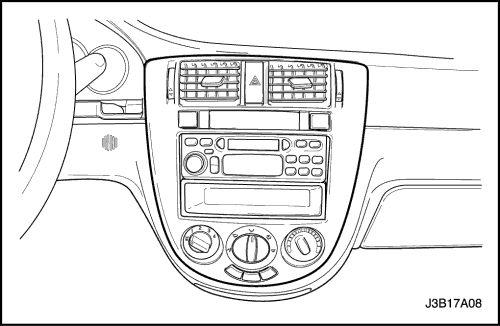


Moldura central (Notchback)
Procedimiento de desmontaje
- Desconecte el cable de control de modo de la compuerta de modo.
- Desmonte la moldura central.
- Desenchufe el conector eléctrico.
procedimiento de montaje
- Conecte el cable de control de modo de la compuerta de modo.
- Enchufe el conector eléctrico.
- Monte la moldura central.

Moldura central (Hatchback, Station Wagon)
Procedimiento de desmontaje
- Desconecte el cable negativo de la batería.
- Desmonte la moldura central haciendo palanca.
- Desconecte el cable de control de modo de la compuerta de modo.
- Desenchufe el conector eléctrico.
- Desmonte la moldura central.
procedimiento de montaje
- Conecte el cable de control de modo de la compuerta de modo.
- Enchufe el conector eléctrico.
- Monte la moldura central.
- Conecte el cable negativo de la batería.
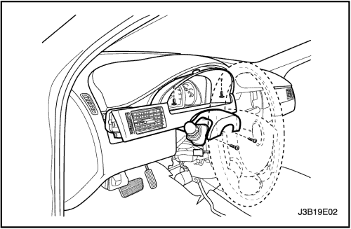
Panel de acabado del cuadro de instrumentos (Notchback)
Procedimiento de desmontaje
- Quite los tornillos y desmonte el panel de acabado del cuadro de instrumentos.
- Desenchufe los conectores eléctricos.
procedimiento de montaje
- Enchufe los conectores eléctricos.
- Monte el panel de acabado del cuadro de instrumentos con sus tornillos.

Panel de acabado del cuadro de instrumentos (Hatchback, Station Wagon)
Procedimiento de desmontaje
- Quite los tornillos y desmonte el panel de acabado del cuadro de instrumentos.
procedimiento de montaje
- Coloque los tornillos y monte el panel de acabado del cuadro de instrumentos.
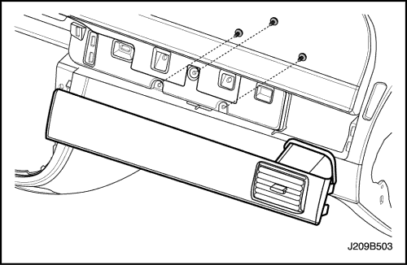
Moldura decorativa
Procedimiento de desmontaje
- Desmonte la guantera.
- Quite los tornillos y la moldura embellecedora.
procedimiento de montaje
- Monte la moldura embellecedora con sus tornillos.
Apretar
Apriete el tornillo de la moldura embellecedora hasta 2 N•m (18 lb-pulg.).
- Monte la guantera.
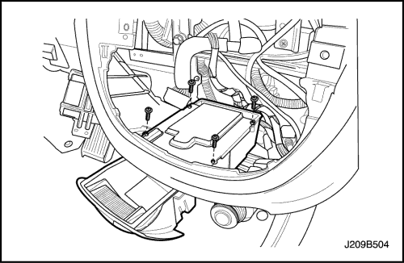
Cenicero
Procedimiento de desmontaje
- Desmonte la moldura central del panel de instrumentos.
- Quite los tornillos y desmonte el alojamiento del cenicero.
procedimiento de montaje
- Monte el alojamiento del cenicero con sus tornillos.
- Monte la moldura central del panel de instrumentos.
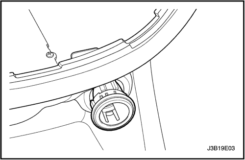
Encendedor
Procedimiento de desmontaje
- Desmonte la moldura central del panel de instrumentos.
- Desenchufe el conector eléctrico del encendedor de cigarrillos y de la luz del cenicero.
- Desmonte el alojamiento del encendedor de cigarrillos del panel de instrumentos.
procedimiento de montaje
- Monte el alojamiento del encendedor de cigarrillos en el panel de instrumentos.
- Monte el encendedor de cigarrillos en su alojamiento.
- Enchufe el conector eléctrico del encendedor de cigarrillos y de la luz del cenicero.
- Monte la moldura central del panel de instrumentos.
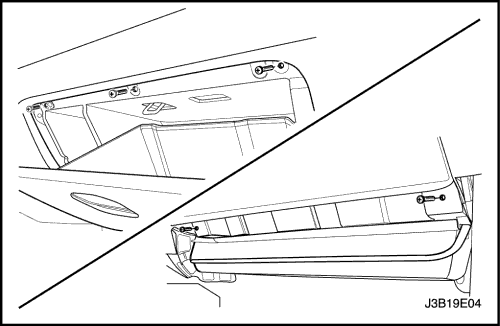
Guantera
Procedimiento de desmontaje
- Quite los tornillos y desmonte la guantera.
procedimiento de montaje
- Monte la guantera con sus tornillos.
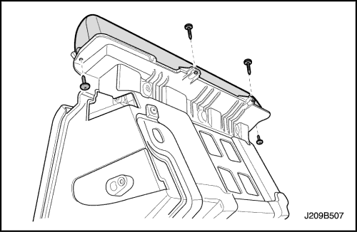
Caja de depósito (Notchback)
Procedimiento de desmontaje
- Desmonte la guantera.
- Quite los tornillos y desmonte la caja de depósito.
procedimiento de montaje
- Monte la caja de depósito con sus tornillos.
- Monte la guantera.
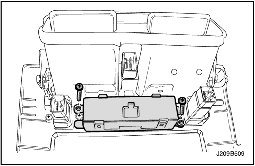
Reloj digital (Notchback)
Procedimiento de desmontaje
- Desconecte el cable negativo de la batería.
- Desmonte la moldura central.
- Desenchufe el conector eléctrico.
- Quite los tornillos y desmonte el reloj digital.
procedimiento de montaje
- Monte el reloj digital con sus tornillos.
- Enchufe el conector eléctrico.
- Monte la moldura central.
- Conecte el cable negativo de la batería.

Reloj digital (Hatchback, Station Wagon)
Procedimiento de desmontaje
- Desconecte el cable negativo de la batería.
- Retire la tapa superior central del panel de instrumentos.
- Quite los tornillos y desmonte el reloj.

procedimiento de montaje
- Monte el reloj con sus tornillos.
Apretar
Apriete los tornillos del reloj hasta 3 N•m (27 lb-pulg.).
- Coloque la tapa superior central del panel de instrumentos.
- Conecte el cable negativo de la batería.
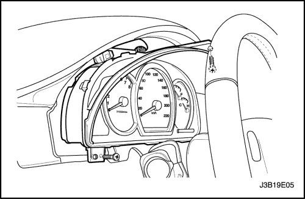
Grupo de instrumentos
Procedimiento de desmontaje
- Desconecte el cable negativo de la batería.
- Desmonte el panel de acabado del cuadro de instrumentos.
- Quite los tornillos y desmonte el cuadro de instrumentos.
- Desenchufe los conectores eléctricos.
procedimiento de montaje
- Enchufe los conectores eléctricos.
- Monte el cuadro de instrumentos con sus tornillos.
Apretar
Apriete el tornillo del cuadro de instrumentos hasta 4 N•m (35 lb-pulg.).
- Monte el panel de acabado del cuadro de instrumentos.
- Conecte el cable negativo de la batería.
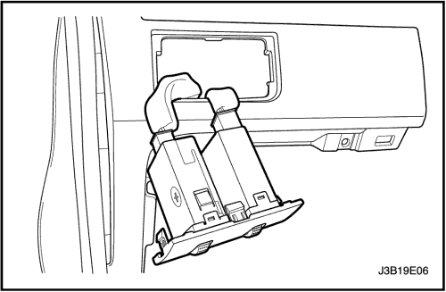
Potenciómetro de intensidad de la luz del cuadro de instrumentos
Procedimiento de desmontaje
- Desmonte el conjunto del potenciómetro de intensidad de luz del cuadro de instrumentos.
- Desenchufe los conectores eléctricos.
procedimiento de montaje
- Enchufe los conectores eléctricos.
- Monte el conjunto del potenciómetro de intensidad de luz del cuadro de instrumentos.
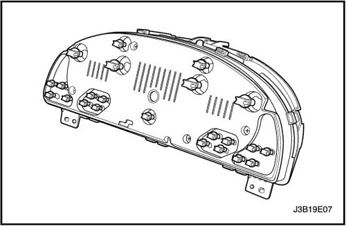
Luces indicadoras del grupo de instrumentos
Procedimiento de desmontaje
- Desconecte el cable negativo de la batería.
- Desmonte el cuadro de instrumentos. Consulte el apartado "Cuadro de instrumentos" de esta sección.
- Desmonte la bombilla defectuosa por la parte posterior del cuadro.
procedimiento de montaje
- Monte una bombilla nueva.
- Monte el cuadro de instrumentos. Consulte el apartado "Cuadro de instrumentos" de esta sección.
- Conecte el cable negativo de la batería.
Tablero de instrumentos
Procedimiento de desmontaje
- Desconecte el cable negativo de la batería.
- Desmonte la consola del piso. Consulte la Sección 9G, Guarnecido interior.
- Desmonte el sensor solar. Consulte la Sección 7D, Sistema de calefacción, ventilación y aire acondicionado con control automático de temperatura.
- Desmonte el radiocasete estéreo AM/FM. Consulte la Sección 9F, Equipo de sonido.
- Desmonte la moldura central.
- Desmonte el conjunto del potenciómetro de intensidad de luz del cuadro de instrumentos.
- Desmonte el panel de acabado del cuadro de instrumentos. Consulte el apartado "Panel de acabado del cuadro de instrumentos" de esta sección.
- Desmonte el cuadro de instrumentos. Consulte el apartado "Cuadro de instrumentos" de esta sección.
- Desmonte la guantera y su alojamiento. Consulte el apartado "Guantera" de esta sección.
- Desmonte el apoyo de la rodilla. Consulte la Sección 9G, Guarnecido interior.
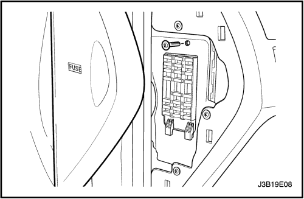
- Quite los tornillos y retire las tapas laterales del panel de instrumentos.
- Quite el tornillo y desmonte la caja de fusibles del panel de instrumentos.
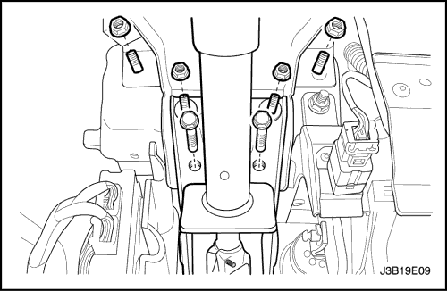
- Quite las tuercas y los tornillos que sujetan la columna de la dirección.
- Desenchufe el conector eléctrico de la columna de la dirección.
- Baje la columna de la dirección.
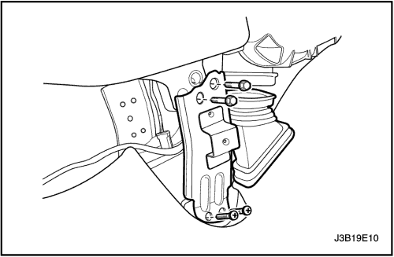
- Quite los tornillos.
- Desmonte las piezas de conexión.
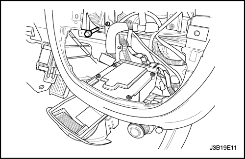
- Quite el tornillo que sujeta el centro del panel de instrumentos a la carrocería.
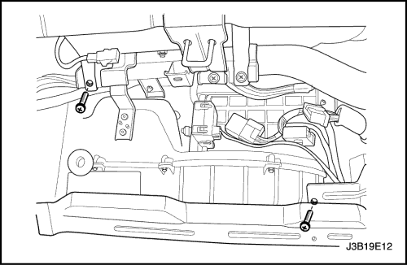
- Quite los tornillos del panel de instrumentos detrás del anclaje de la guantera.
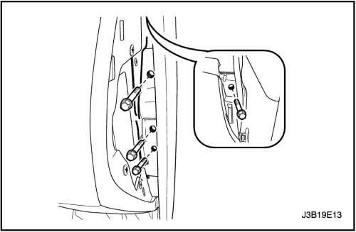
- Quite los tornillos que sujetan los laterales del panel de instrumentos a la carrocería.
- Desenchufe los conectores eléctricos del panel de instrumentos.
- Desmonte el panel de instrumentos.
procedimiento de montaje
- Coloque el panel de instrumentos en el vehículo.
- Enchufe los conectores eléctricos del panel de instrumentos.
Aviso: Metales distintos en contacto directo pueden corroerse rápidamente. Asegúrese de utilizar los elementos de sujeción correctos para evitar una corrosión prematura.
- Coloque los tornillos que sujetan los laterales del panel de instrumentos a la carrocería.
Apretar
Apriete los tornillos de sujeción del panel de instrumentos a la carrocería hasta 22 N•m (16 lb-pie).
- Coloque los tornillos del panel de instrumentos detrás del anclaje de la guantera.
- Coloque el tornillo que sujeta el centro del panel de instrumentos a la carrocería.
Apretar
Apriete los tornillos de sujeción del panel de instrumentos a la carrocería hasta 22 N•m (16 lb-pie).
- Monte las piezas de conexión con sus tornillos.
Apretar
Apriete los tornillos de las piezas de conexión hasta 22 N•m (16 lb-pie).
- Levante la columna de la dirección.
- Enchufe el conector eléctrico de la columna de la dirección.
- Coloque las tuercas y los tornillos que sujetan la columna de la dirección.
Apretar
Apriete las tuercas de la columna de la dirección hasta 22 N•m (16 lb-pie).
Apriete los tornillos de la columna de la dirección hasta 22 N•m (16 lb-pie).
- Monte la caja de fusibles del panel de instrumentos con su tornillo.
- Monte las tapas laterales del panel de instrumentos con sus tornillos.
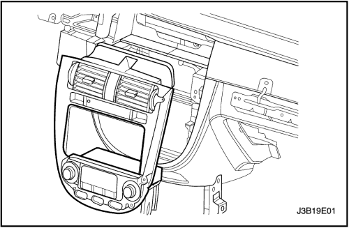
- Monte el apoyo de la rodilla. Consulte la Sección 9G, Guarnecido interior.
- Monte la guantera y su alojamiento. Consulte el apartado "Guantera" de esta sección.
- Monte el cuadro de instrumentos. Consulte el apartado "Cuadro de instrumentos" de esta sección.
- Monte el panel de acabado del cuadro de instrumentos. Consulte el apartado "Panel de acabado del cuadro de instrumentos" de esta sección.
- Monte el conjunto del potenciómetro de intensidad de luz del cuadro de instrumentos.
- Monte el radiocasete estéreo AM/FM. Consulte la Sección 9F, Equipo de sonido. Monte la moldura central.
- Monte el sensor solar. Consulte la Sección 7D, Sistema de calefacción, ventilación y aire acondicionado con control automático de temperatura.
- Monte la consola del piso. Consulte la Sección 9G, Guarnecido interior.
- Conecte el cable negativo de la batería.

Barra de anclaje
Procedimiento de desmontaje
- Desmonte el panel de instrumentos. Consulte el apartado "Panel de instrumentos" de esta sección.
- Desmonte el mazo de cables de la barra de anclaje.
- Quite los tornillos que sujetan ambos laterales de la barra de anclaje a la carrocería.

- Quite los tornillos que sujetan la barra de anclaje a la carrocería, debajo del cristal del parabrisas en el lado del conductor.
- Desmonte la barra de anclaje del vehículo.
procedimiento de montaje
- Monte la barra de anclaje en el vehículo.
- Coloque los tornillos que sujetan la barra de anclaje a la carrocería, debajo del cristal del parabrisas en el lado del conductor.
Apretar
Apriete los tornillos de sujeción de la barra de anclaje a la carrocería hasta 22 N•m (16 lb-pie).
- Coloque los tornillos que sujetan los laterales del panel de instrumentos a la carrocería.
Apretar
Apriete los tornillos de sujeción del panel de instrumentos a la carrocería hasta 22 N•m (16 lb-pie).
- Monte el mazo de cables en la barra de anclaje.
- Monte el panel de instrumentos. Consulte el apartado "Panel de instrumentos" de esta sección.
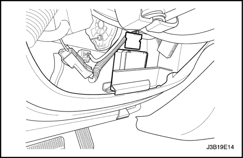
Módulo de sonido de aviso
(Indicado para conducción a izquierdas, conducción a derechas similar)
Procedimiento de desmontaje
- Desconecte el cable negativo de la batería.
- Desmonte el panel de guarnecido para rodillas de debajo de la columna de la dirección.
- Desenchufe el conector eléctrico.
- Quite los tornillos y desmonte el módulo del avisador acústico.
procedimiento de montaje
- Monte el módulo del avisador acústico con sus tornillos.
Apretar
Apriete los tornillos del módulo del avisador acústico hasta 4 N•m (35 lb-pulg.).
- Enchufe el conector eléctrico.
- Monte el panel de guarnecido para rodillas debajo de la columna de la dirección.
- Conecte el cable negativo de la batería.
| © Copyright Chevrolet Europe. Reservados todos los derechos |